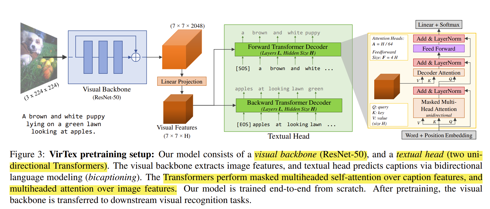
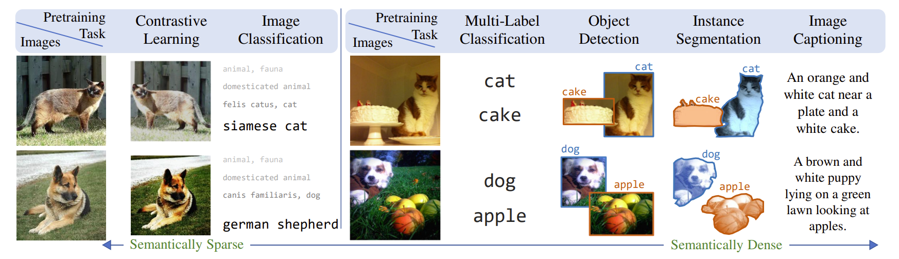
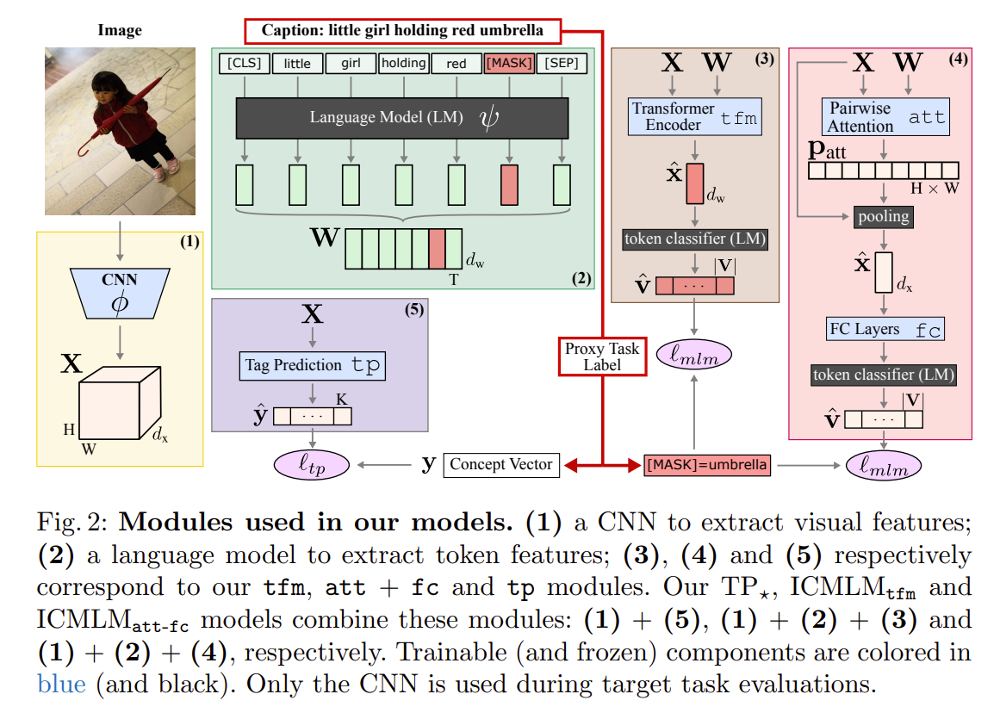
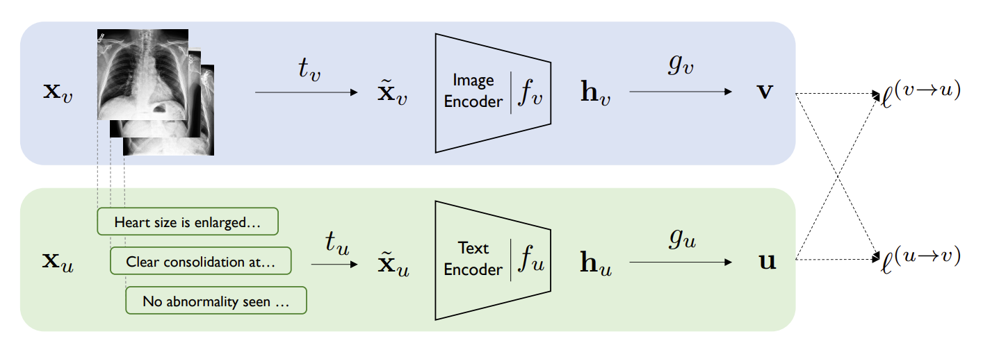
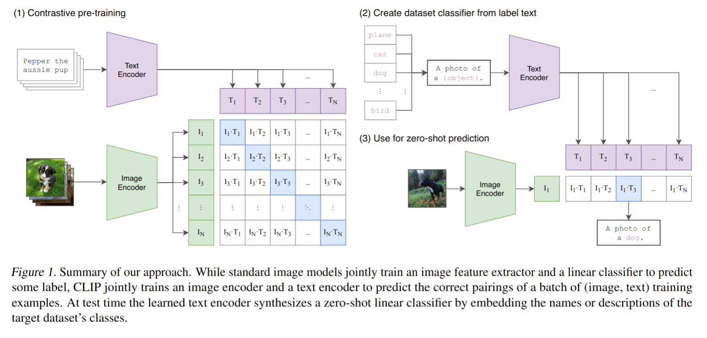

This summary discusses techniques for learning visual representations using natural language supervision, focusing on the ideas presented in several key papers tracing an evolution of thought in this area:
Traditional computer vision relies heavily on large, manually annotated datasets (e.g., ImageNet). While effective for specific benchmark tasks, creating these datasets is expensive, time-consuming, and often requires domain expertise (like in medical imaging). Furthermore, the fixed, discrete categories limit the model's ability to understand more nuanced, open-ended visual concepts or generalize to tasks unseen during training. This approach doesn't scale well to the complexity of the real world.
These papers explore an alternative, falling under the umbrella of self-supervised or weakly-supervised learning: using naturally occurring image-text pairs (like images with captions from the web or medical images with reports). This approach aims to learn rich, transferable visual representations without relying on explicit category labels, using the semantic information embedded in the accompanying text as supervision. The core question is: how can we effectively learn meaningful visual features from this abundant, but often noisy, paired data?
The papers explored different ways to use the text signal to supervise the learning of the visual representation.
VirTex trains a visual backbone (CNN) and a textual head (Transformer) jointly to generate captions for given images, treating caption generation as a pretext task. The intuition is that to generate accurate and coherent captions, the visual model must learn semantically meaningful features that capture not just objects but also their attributes and relationships described in the text. After pre-training, the text transformer head is discarded, and the learned visual backbone is transferred to downstream tasks. They argue captions provide a "semantically denser" signal than simple labels or even some unsupervised contrastive learning approaches of the time.
 ICMLM explores various ways ("proxy tasks") to learn from image-caption pairs, comparing different strategies:
The visual encoder learned through these proxy tasks during pre-training is then transferred.
Both CONVirt (focused on medical images) and CLIP (large-scale web data) employ a contrastive learning approach, which proved highly effective and scalable. They learn a joint embedding space where paired images and texts have high similarity (e.g., using cosine similarity), while unpaired combinations have low similarity.
Architecture: An image encoder (e.g., ResNet, ViT) and a text encoder (e.g., BERT, Transformer) produce fixed-size embeddings. During training, for a batch of N image-text pairs, the model computes an N x N similarity matrix between all image embeddings and all text embeddings. The goal is to maximize similarity along the diagonal (correct pairs) and minimize it off-diagonal (incorrect pairs) using a contrastive loss like InfoNCE. This pushes the embeddings of correct (image, text) pairs closer together while pushing embeddings of incorrect pairs far apart in the shared space, forcing the models to focus on shared semantic features relevant to both modalities.
 CONVirt demonstrated the effectiveness of this approach in the specialized medical domain. CLIP's key differentiators were the massive scale of its pre-training dataset (400 million image-text pairs from the web) and its demonstration of powerful zero-shot transfer capabilities. This scale allowed CLIP to learn highly generalizable representations. For zero-shot inference, CLIP doesn't require task-specific training. Instead, classification tasks are reframed as image-text matching: the image embedding is compared against text embeddings generated from prompts like "a photo of a dog", "a photo of a cat", etc. The prompt with the highest cosine similarity determines the predicted class, enabling impressive performance on diverse tasks without fine-tuning.
Primary sources:
Related: